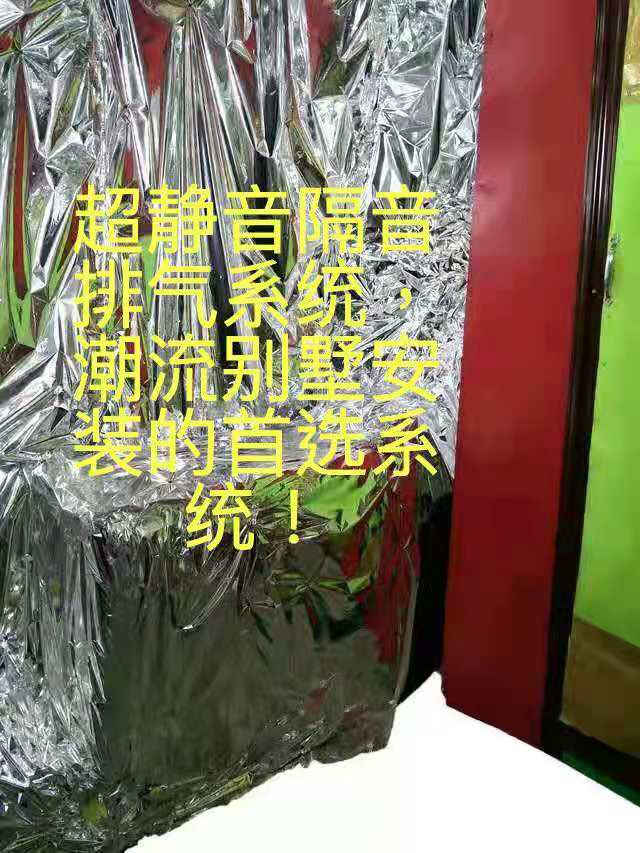
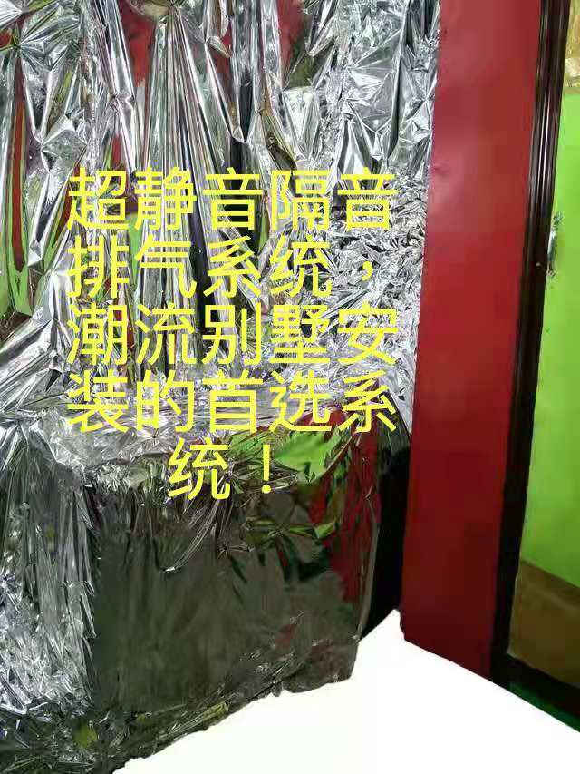

What happens if the room is not ventilated or the air is bad? Hypoxia can cause memory loss, dizziness, loss of appetite, insomnia, and even damage the brain. But what should I do if I want to have a soundproof environment to do all kinds of things and need good oxygen? Our sound insulation and oxygen supply technology can help you. The soundproof cabin, a quiet place at home, ventilated and soundproofed, allows you to sit back and relax in a noisy environment. No methanol, safe and environmentally friendly. Strong soundproofing room, soundproofing is more than 100 decibels, a house that can really sleep in the busy city! . The country’s strongest silent exhaust system and the strongest oxygen supply allow you to breathe a fresher jasmine plant scent during sleep than in the morning, accelerating the recovery of various diseases and tumors, sleeping in a completely noise-free soundproof room, and at a favorable price . Now scientific research shows that breathing more oxygen every day, especially breathing more oxygen during sleep, is conducive to the recovery of various diseases, and can be younger, and can even make the body 30 years younger. The life expectancy in plateau areas is the lowest in the world, with an average of 67 years. , It also has a lot to do with the supply of oxygen! . The 20 cm diameter vent pipe ensures sufficient oxygen while running quietly. At the same time, the unique door slit design makes the sound impossible to escape. Allows you to enjoy a quiet personal world in a 4 square room. Methanol-free, safe and environmentally friendly, it adopts the patented technology of 20 cm large-diameter sound insulation and ventilation, while ensuring sufficient sound insulation, the oxygen ventilation effect is 3-4 times that of the peers. The unique technical patent triple barrier door seam design makes the sound insulation effect reach 60-100 decibels, which is also 2-3 times that of peers. Sufficient oxygen, quiet and environmental protection are our unremitting pursuit.如果房间没有通风或空气不好怎么办？缺氧可导致记忆力减退，头昏眼花，食欲不振，失眠，甚至损害大脑。但是，如果我想要有一个隔音的环境来做各种事情并且需要良好的氧气，该怎么办？我们的隔音和氧气供应技术可以为您提供帮助。隔音小屋是在家中一个安静的地方，通风且隔音，可让您在嘈杂的环境中放松身心。无甲醇，安全环保。强大的隔音室，隔音能力超过100分贝，真正可以在繁忙的城市中入睡的房子！ 。该国最强大的静音排气系统和最强的氧气供应，使您在睡眠中比早晨呼吸新鲜的茉莉花香气，从而加速了各种疾病和肿瘤的康复，在完全无噪音的隔音室内睡觉，并且环境舒适。价格 。现在的科学研究表明，每天呼吸更多的氧气，特别是在睡眠期间呼吸更多的氧气，有利于各种疾病的恢复，并且可以变得更年轻，甚至可以使身体年轻30岁。高原地区的平均寿命是世界上最低的，平均为67岁。 ，这也与氧气的供应有很大关系！ 。直径为20厘米的排气管可确保安静运行时有足够的氧气。同时，独特的门缝设计使声音无法散发出来。使您可以在4平方米的房间里享受一个安静的个人世界。不含甲醇，安全环保，采用20厘米大直径隔音和通风的专利技术，在确保足够的隔音效果的同时，氧气的通风效果是同行的3-4倍。独特的技术专利三重阻隔门缝设计使隔音效果达到60-100分贝，也是同类产品的2-3倍。充足的氧气，安静和环保是我们不懈的追求。
Sep20, 2020

妙强科技产品的科技优势！
想投资或者加盟？ 请点击<下载节点2>了解更多妙强科技的详细商业计划
Want to invest or join? Please click <下载节点2> to learn more about Miaoqiang Technology's detailed business plan

妙强的科技理念。
Miaoqiang's technological concept. As a technology company, Miaoqiang Technology has continuously focused on technological innovation and upgrading, creating a variety of patented products with high technical content and market competitiveness. We focus on innovation and continuous upgrading of new technologies, and always maintain a competitive advantage with an enterprising and positive attitude!妙强科技作为一家科技公司，不断将重心专注于科技创新和升级，打造出各种技术含量和市场 竞争力极高的专利产品。 我们专注于创新和不断升级新技术，以进取积极的心态始终保持竞争的优势地位！
案例分析1
:2100万买“超静音”别墅 5年后因“噪音”索赔400余万------
随着生活水平的提高，人们越来越关注生活品质，向往宁静的生活空间。5年前，方女士斥数千万巨资购买了一套号称＂超静音＂的别墅，可入住后，却夜夜不能安眠，无奈之下只能将新房＂弃而不住＂。几番与开发商协商无果，方女士只能诉诸法庭。
2016年8月，方女士花了2100万元购买了一套号称＂超静音＂的别墅，可入住后却发现，享受安宁生活的愿望成了奢望。方女士说：＂小区里确实挺安静，但回家后就被吵得不行，特别是晚上新风系统和空调开启后总听到呼呼的风声，根本无法安睡。＂
然而，向物业报修后，问题始终没有解决，方女士只能搬出了新房。近几年，为了噪声问题，方女士与开发商多次沟通无果，于是一纸诉状要求开发商赔偿400多万元。
为了确定该案所涉室内噪声是否超标，法院委托司法鉴定科学研究院对房屋进行了鉴定。在方女士和开发商共同见证的情况下，鉴定人员关闭卧室门窗，将空调和新风系统开至最大工作状态，结果卧室内夜间噪声超过标准限值，构成噪声污染，目前案件还在进一步审理中。
其实这种事情根本用不着法律解决，妙强科技的超静音隔音房，就能切实解决这个问题！
Case study 1:
21 million to buy a "ultra-quiet" villa 5 years later due to "noise" claims for more than 4 million-------
With the improvement of living standards, people pay more and more attention to the quality of life and yearn for a quiet living space. Five years ago, Ms. Fang spent tens of millions of dollars to purchase a villa called "ultra-quiet". After moving in, she couldn't sleep peacefully at night. In desperation, she had to "abandon the new house without living". Several negotiations with the developers were fruitless, and Ms. Fang could only resort to court.
In August 2016, Ms. Fang spent 21 million yuan to purchase a so-called "ultra-quiet" villa, but after moving in, she found that the desire to enjoy a peaceful life became a luxury. Ms. Fang said: "The community is really quiet, but when I go home, I get noisy. Especially at night when the fresh air system and air conditioner are turned on, I always hear the sound of wind, and I can't sleep at all."
However, after reporting to the property for repairs, the problem was never resolved, and Ms. Fang could only move out of the new house. In recent years, due to the noise problem, Ms. Fang has repeatedly communicated with the developer to no avail, so a petition demanded the developer to compensate more than 4 million yuan.
In order to determine whether the indoor noise involved in the case exceeded the standard, the court commissioned the Forensic Science Research Institute to appraise the house. Under the witness of Ms. Fang and the developer, the appraiser closed the bedroom doors and windows and turned on the air-conditioning and fresh air system to the maximum working condition. As a result, the night noise in the bedroom exceeded the standard limit, which constituted noise pollution. The case is still under trial .
In fact, this kind of thing does not need to be solved by law at all. The ultra-quiet soundproof room of Miaoqiang Technology can effectively solve this problem!
噪音的危害:
噪声给人带来生理上和心理上的危害主要有以下几方面：损害听力。有检测表明：当人连续听摩托车声，8小时以后听力就会受损;若是在摇滚音乐厅，半小时后，人的听力就会受损。有害于人的心血管系统、中国对城市噪声与居民健康的调查表明：地区的噪声每上升一分贝，高血压发病率就增加3%。影响人的神经系统，使人急躁、易怒。影响睡眠, 造成疲倦。 从心理声学的角度来说，噪音又称噪声，一般是指不恰当或者不舒服的听觉刺激。它是一种由为数众多的频率组成的并具有非周期性振动的复合声音。简言之，噪音是非周期性的声音振动。它的音波波形不规则，听起来感到刺耳。从社会和心理意义来说，凡是妨碍人们学习、工作和休息并使人产生不舒适感觉的声音，都叫噪音。如流水声、敲打声、沙沙声，机器轰鸣声等，都是噪音。它的测量单位是分贝。零分贝是可听见音的最低强度。 噪声有高强度和低强度之分。低强度的噪声在一般情况下对人的身心健康没有什么害处，而且在许多情况下还有利于提高工作效率。高强度的噪声主要来自工业机器(如织布机、车床、空气压缩机、风镐、鼓风机等)、现代交通工具(如汽车、火车、摩托车、拖拉机、飞机等)、高音喇叭、建筑工地以及商场、体育和文娱场所的喧闹声等。这些高强度的噪声危害着人们的机体，使人感到疲劳，产生消极情绪，甚至引起疾病。高强度的噪声，不仅损害人的听觉，而且对神经系统、心血管系统、内分泌系统、消化系统以及视觉、智力等都有不同程度的影响。如果人长期在 95 分贝的噪声环境里工作和生活，大约有 29% 的会丧失听力;即使噪声只有 85 分贝人，也有 10% 的人会发生耳聋; 120~130 分贝的噪声，能使人感到耳内疼痛;更强的噪音会使听觉器官受到损害。在神经系统方面，强噪音会使人出现头痛、头晕、倦怠、失眠、情绪不安、记忆力减退等症候群，脑电图慢波增加，植物性神经系统功能紊乱等;在心血管系统方面，强噪音会使人出现脉搏和心率改变，血压升高，心律不齐，传导阻滞，外周血流变化等;在内分泌系统方面，强噪音会使人出现甲状腺机能亢进，肾上腺皮质功能增强，基础代谢率升高，性机能紊乱，月经失调等;在消化系统方面，强噪音会使人出现消化机能减退，胃功能紊乱，胃酸减少，食欲不振等。总之，强噪音会导致人体一系列的生理、病理变化。有人曾对在噪音达 95 分贝的环境中工作的 202 人进行过调查，头晕的占 39% ，失眠的占 32% ，头痛的占 27% ，胃痛的占 27% ，心慌的占 27% ，记忆力衰退的占 27% ，心烦的占 22% ，食欲不佳的占 18% ，高血压的占 12% 。所以，我们不能对强噪音等闲视之，应采取措施加以防止。当然，人们对噪音比较敏感，各个体之间是有很大差异 ，有的人对噪音比较敏感，有的人对噪音有较强的适应性，也与人的需要、情绪等心理因素有关。不管人们之间的差异如何，对强噪音总是需要加以防止的。 孕妇长期处在超过50分贝的噪音环境中，会使内分泌腺体功能紊乱，并出现精神紧张和内分泌系统失调。严重的会使血压升高、胎儿缺氧缺血、导致胎儿畸形甚至流产。而高分贝噪音能损坏胎儿的听觉器官，致使部分区域受到影响。影响大脑的发育，导致儿童智力低下。 噪音的恶性刺激，严重影响我们的睡眠质量，并会导致头晕、头痛、失眠、多梦、记忆力减退、注意力不集中等神经衰弱症状和恶心、欲吐、胃痛、腹胀、食欲呆滞等消化道症状。营养学家研究发现，噪音还能使人体中的维生素、微量元素氮基酸、谷氮酸、赖氮酸等必须的营养物质的消耗量增加，影响健康;噪音令人肾上腺分泌增多心跳加快、血压上升，容易导致心脏病发;同时噪音可使人唾液、胃液分泌减少，胃酸降低，从而患胃溃疡和十二指肠溃疡。影响人的神经系统，使人急躁、易怒。影响睡眠，造成疲倦。关于公司

Miaoqiang Technology is the world's most innovative and technologically upgraded technology company. The company's products continue to innovate and upgrade technical content to meet the high-quality needs of customers. The products are currently sold to the United States, Japan and many other overseas markets.妙强科技是世界上最具创新和技术升级能力的科技公司.公司产品不断创新，升级技术含量，以满足客户高品质的需求，产品目前销往美国，日本等诸多海外市场。
Miaoqiang Technology's Taobao and Pinduoduo brand stores in China can be scanned or clicked to learn about the detailed product status.妙强科技在中国的闲鱼和拼多多品牌店，扫描或者点击就可以了解详细商品情况。
 
